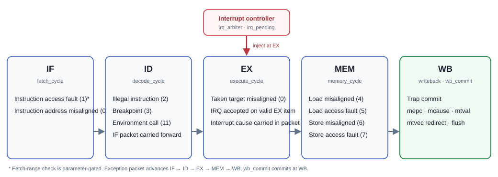

CJ deliverables · coach review draft · G1 style reference
Subgates: 3.4, 3.6 · Master CJ subgate map
PLIC not used / CLIC not used

Reference: G1 trap model - PLIC/CLIC decision - 13-channel source map · core interrupt connection · EX acceptance · WB commit
In Progress
Reference: SoC interrupt wiring · timer source · core interrupt program
Review copies stored with this gate. Canonical source paths are listed in the gate README; source originals are unchanged.
These are retained artifacts, not reruns performed for this page. A passing unit or directed run supports only its named scope.
| Evidence area | Observed result and limits |
|---|---|
| IRQ controller unit (evidence owned by G4.12) | The retained 11-Nov unit run passes 196,608 arbitration snapshots plus gateway, MIP/MIE, mintprio and commit checks, with 471/471 declared functional bins; code coverage remains partial. These are separately driven unit results, not SoC integration, and the canonical pages now live under G4.12. Evidence: IRQ unit verification (G4.12) · functional_summary.txt |
| Integration disposition | PLIC is not used; the project uses a direct core interrupt interface. CLINT is not yet integrated. No SoC-level end-to-end interrupt pass is retained. Evidence: SoC interrupt wiring · checklist |
Evidence review performed 11 Nov 2026 from retained artifacts. “Latest” means latest matching artifact found in this workspace, not latest possible remote run.